Foodics is cloud-based POS and restaurant management system. This module requests data from foodics and then data is fed into Odoo which will take care of the further process.
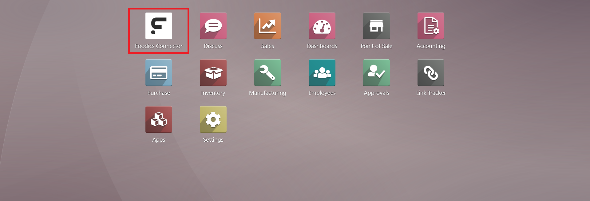
Say NO! to confusing clutter. One home for all integration features.
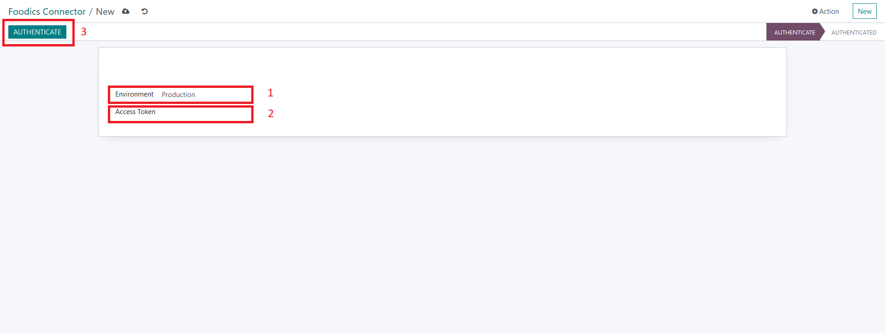
Authenticating new Foodics token follows a three-easy-step-process. 1-Select your token environment. 2-Copy and paste your token. 3-Click the authenticate button.
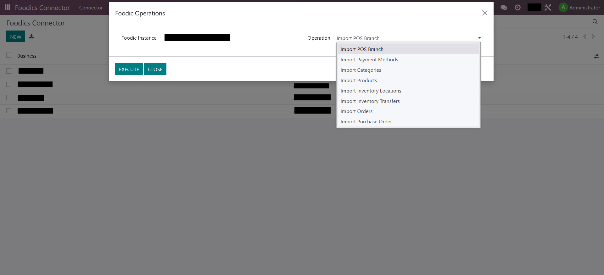
For every authenticated token, user may select a certain query he/she wish to request from Foodics servers.
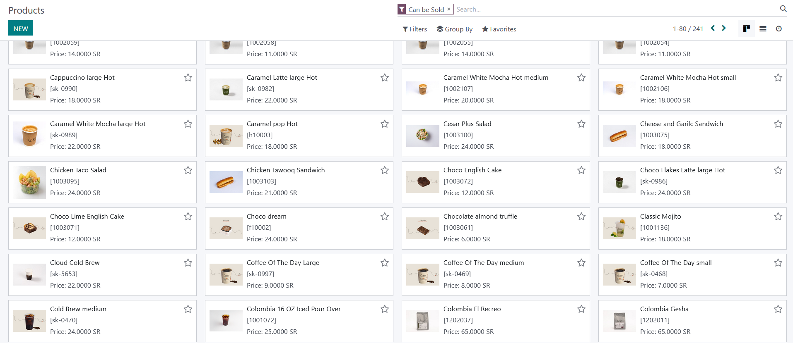
A figure that shows a part of synchronized products.
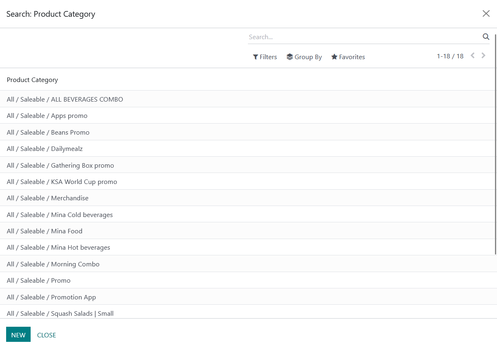
A figure that shows a part of synchronized product categories.
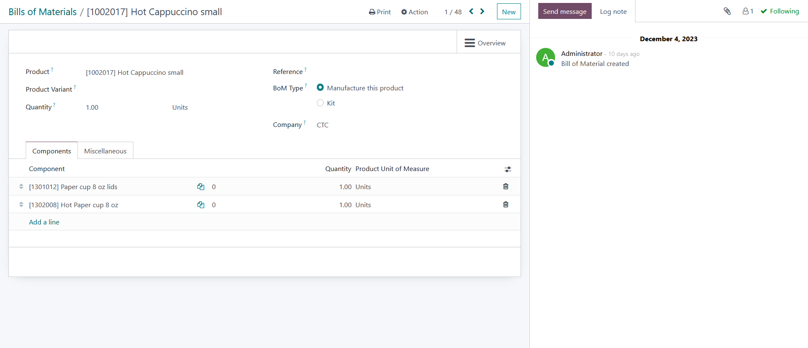
A figure that shows a one BoM for a synchronized product with ingredients.
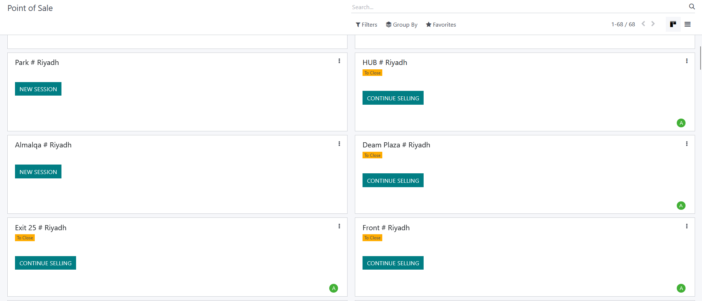
A figure that shows a part of synchronized POS branches.
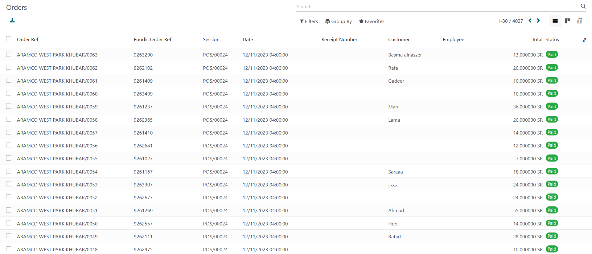
A figure that shows a part of synchronized POS orders.
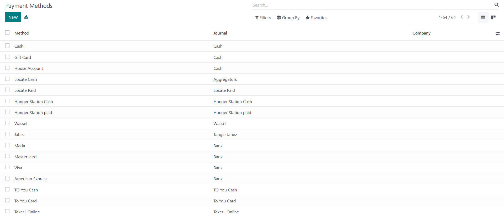
A figure that shows a part of synchronized POS payment methods.
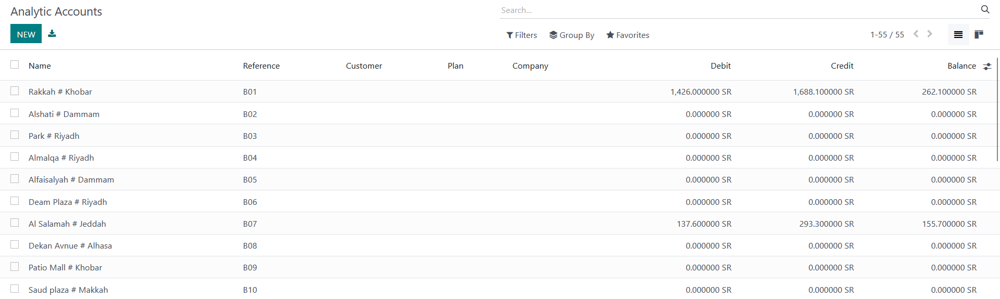
A figure that shows a part of analytical accounts created for synchronized branches.
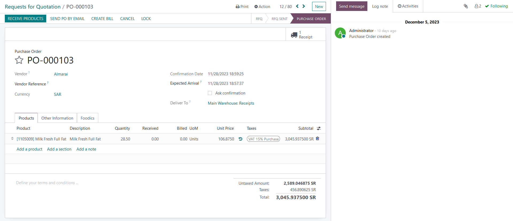
A figure that shows an order of synchronized purchase orders.
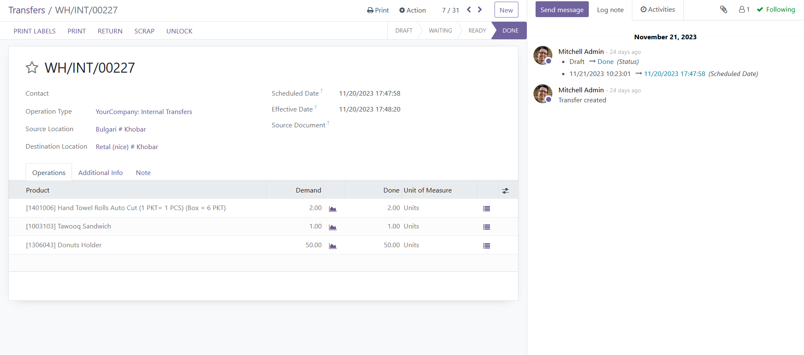
A figure that shows one of the synchronized inventory transfers.